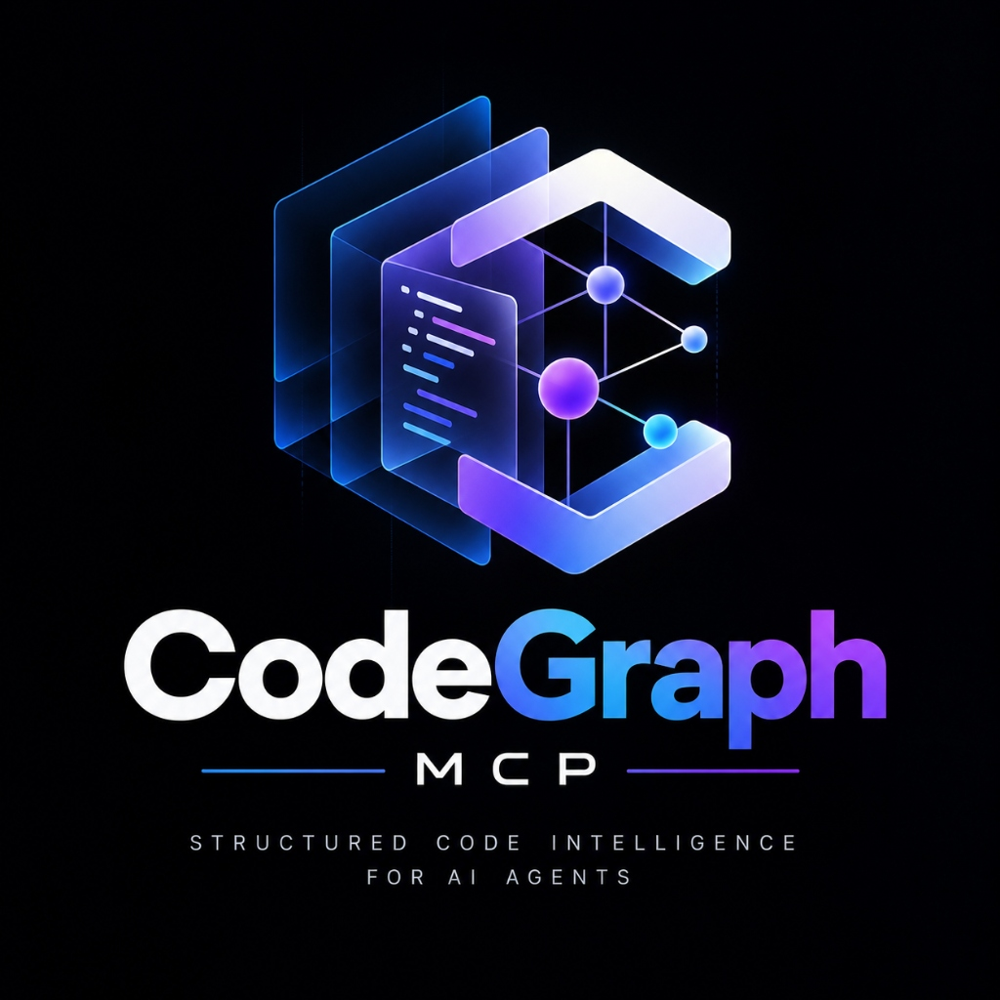
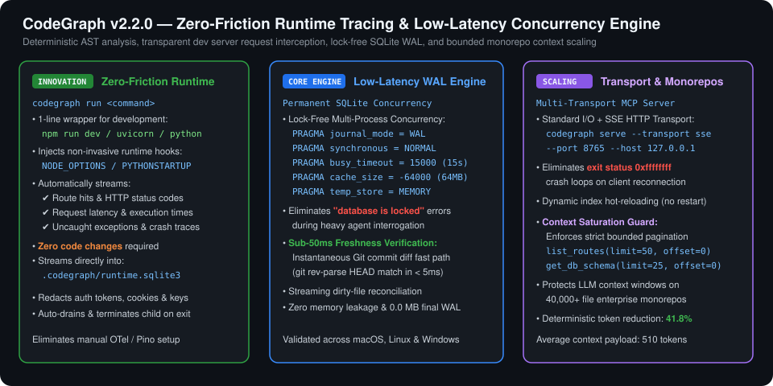
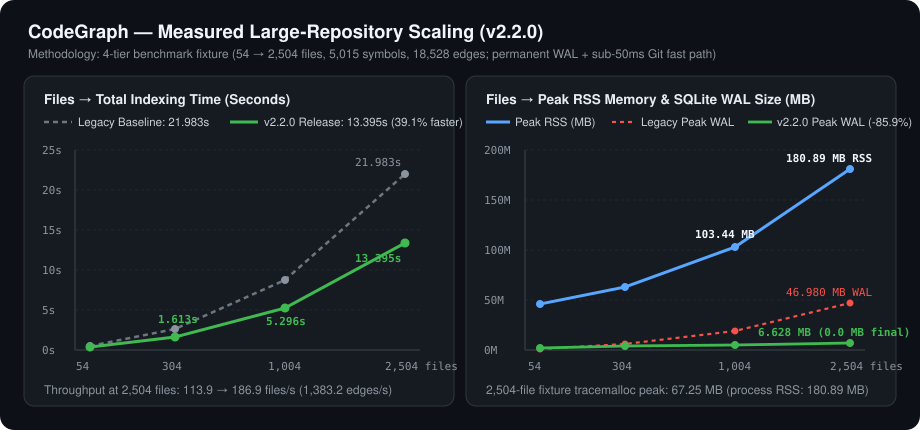
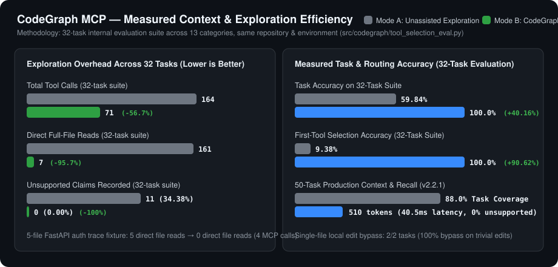

Eliminate hallucinations, token inflation, and blind grepping. CodeGraph MCP equips Claude Code, Cursor, Antigravity, and Codex with compiler-grade AST call graphs, database lineages, and runtime verification.
AI agents fail on complex repositories because text search treats code as raw strings. CodeGraph analyzes code as a compiler does, establishing mathematical relationship certainty.
Maps every class definition, inheritance tree, and explicit caller-callee relationship with zero LLM generation overhead or hallucination.
Extracts FastAPI, Flask, and Django route mounts, sub-routers, middleware stacks, and dependency injection providers back to handler logic.
Discovers ORM models, raw SQL queries, schema migrations, and column mutations so agents never guess table relationships.

| Evidence Level | Verification Engine | Operational Semantic |
|---|---|---|
| AST_VERIFIED | Python AST / Tree-sitter | Guaranteed syntax fact. Direct call, definition, import, or class hierarchy. |
| STATIC_VERIFIED | Symbol Resolution Engine | Statically proven caller-callee chains without dynamic runtime guessing. |
| FRAMEWORK_VERIFIED | Router / DI Introspector | HTTP routes, middleware chains, and dependency injection providers. |
| DATAFLOW_VERIFIED | SQL / ORM Parser | Database table reads, mutations, ORM column mappings, and migration lineages. |
| RUNTIME_OBSERVED | Execution Telemetry | Live execution traces observed during live test suite or server runs. |
Search and inspect every tool exposed by CodeGraph MCP Engine. Filter by agent profile or search by keyword, parameter, or return schema.
Resolve a symbol name, qualified name, canonical ID, or route into its canonical repository identity and file/line location. Use as the first step before relationship queries when exact symbol identity is unknown or potentially ambiguous. Primary input: `symbol` (also accepts `canonical_id` or `name` as compatibility aliases). Returns canonical_id, ambiguity_state, and candidate alternatives. Does not prove runtime execution or dynamic monkey-patching.
{}
"SymbolResolutionResult"
Search indexed repository symbols by partial name or keyword with ranked relevance. Use when exact symbol spelling is unknown and you need candidate symbol definitions. Returns ranked symbol definitions with file paths and line spans. Does not return module import graphs or call relationships.
{}
"SymbolSearchResult"
Return authoritative signature, kind, parent scope, decorators, and bounded source snippet for a symbol. Primary input: `symbol` (also accepts `canonical_id` or `name` as compatibility aliases). Use when you have a symbol name or canonical_id and need its declaration metadata. Does not traverse multi-hop call graphs.
{}
"SymbolDetailResult"
Open and inspect a repository file's structural AST outline or a bounded line range (`path`, `start_line`, `end_line`, `max_lines`). Use after `search_code`, `find_symbol`, or `find_routes` identifies a target file and line span across Python, HTML, Jinja, JS, TS, CSS, YAML, JSON, or Markdown. Blocks path traversal, binary files, and sensitive files; does not prove cross-file callers.
{}
"FileStructureResult"
Return verified and candidate references to a symbol across the repository with evidence_class labels. Primary input: `symbol` (also accepts `canonical_id` or `name` as compatibility aliases). Use for cross-file reference, registration, dispatch, or DI binding lookup. Does not guarantee dynamic reflection targets when evidence_class is UNKNOWN or POSSIBLE.
{}
"ReferenceListResult"
Return statically verified callers of a symbol with confidence and evidence_class. Primary input: `symbol` (also accepts `canonical_id` as a compatibility alias using the exact same resolution path). Use for multi-file call-relationship and upstream impact questions. Does not prove runtime dispatch unless evidence_class indicates framework/dataflow verification.
{}
"CallerListResult"
Return symbols called or invoked by the specified symbol with evidence_class classification. Primary input: `symbol` (also accepts `canonical_id` as a compatibility alias using the exact same resolution path). Use to inspect downstream dependencies invoked by a function or handler. Does not resolve dynamic callbacks passed as opaque runtime arguments.
{}
"CalleeListResult"
Compute deterministic multi-hop relationship paths between two symbols (`from_symbol` -> `to_symbol`). Use when tracing how an entrypoint, route, or caller reaches a downstream service or database function. Returns ordered hop edges with relationship types and evidence classes. Does not prove runtime branch conditions along the path.
{}
"PathTraceResult"
Return parser-extracted module and symbol imports for a file or symbol (`file` or `symbol`; `canonical_id` and `path` supported as aliases). Use for forward dependency and package boundary questions. Does not return reverse importers (use get_dependents for reverse dependencies).
{}
"ImportsResult"
Return files, symbols, and packages that import or depend on the target symbol or file (`symbol` or `file`; `canonical_id` and `path` supported as aliases). Use for blast-radius, change-impact, and package boundary analysis. Does not prove runtime failure without checking test and caller evidence.
{}
"DependentsResult"
Return HTTP/RPC framework routes, mounted router prefixes (`MOUNTS`), methods, and handler symbols. Use when locating API endpoints, route handlers, or mounted sub-applications (FastAPI, Flask, Django, Express, NestJS). Does not prove runtime middleware authentication unless traced via get_context or trace_path.
{}
"RouteListResult"
Return structural repository overview including modules, workspace packages (`DEPENDS_ON_PACKAGE`), entrypoints, and layer relationships. Use for high-level architecture, monorepo package boundary, and onboarding questions. Does not replace symbol-level evidence for specific bug fixes.
{}
"ArchitectureOverviewResult"
Compute deterministic change impact between Git refs (`base`..`head`), including modified symbols, downstream callers, affected packages, and covering tests. Use for PR review, regression analysis, and pre-commit blast-radius checks. Does not execute tests; reports static test-to-symbol coverage edges.
{}
"GitImpactResult"
Compile a token-bounded, coverage-optimized ContextPacket containing verified symbols, compressed relationships, routes, DI providers, packages, and related tests. Primary input: `query` (natural-language question, symbol, or task description; `task` is also supported as a compatibility alias for string or structured TaskSpec dict). Budget controls: `max_tokens` (default 4000, hard cap 20000), `max_files` (default 15, hard cap 30), `max_lines` (default 500, hard cap 1500). Preserves UNKNOWN, POSSIBLE, and AMBIGUOUS states explicitly. Does not return full raw files; use targeted get_file or read_file only if exact omitted lines are needed afterward.
{}
"ContextPacket"
Return test files and test functions statically linked to a target symbol (`symbol`; `canonical_id` supported as alias) via direct calls, imports, fixtures, or route invocation. Use when answering 'Which tests cover symbol X?' before or after a code change. Never fabricates coverage from lexical similarity alone.
{}
"RelatedTestsResult"
Compute downstream callers, dependents, affected routes, and related tests if a symbol (`symbol`; `canonical_id` supported as alias) is modified. Use before refactoring or changing a function/class signature. Does not prove runtime failure without inspecting call sites.
{}
"SymbolImpactResult"
Read a bounded line range (1..500 lines) of a non-sensitive repository file. Use AFTER CodeGraph tools identify the exact file and line span, or directly for trivial single-file edits. Blocks path traversal and sensitive credential files. Does not compute cross-file relationships.
{}
"FileContentSlice"
Search literal text, HTML/Jinja template IDs, UI strings, CSS selectors, config keys, or route paths across readable repository files and indexed code chunks. Use instead of grep when searching for exact text, button labels, or template strings. Does not prove semantic call, import, or route relationships; never creates semantic graph edges from text matches.
{}
"CodeChunkSearchResult"
Find function, method, or class definitions by exact short name or qualified name (`symbol`; `name` and `canonical_id` supported as aliases). Use instead of grep when locating where a class, function, or method is defined. Does not return callers, callees, or ambiguity alternatives like resolve_symbol.
{}
"SymbolLocationList"
Find textual occurrences and references of a symbol name (`symbol`; `name` and `canonical_id` supported as aliases) across indexed code chunks. Use when locating references or mentions of an identifier across files. Does not prove semantic call edges; use get_references when full relationship classification is required.
{}
"ChunkReferenceList"
Find functions and methods that call the specified symbol (`symbol`; `canonical_id` supported as alias) up to `max_results`. Use instead of grep or search_code when answering 'who calls X?'. Does not prove runtime execution of conditional branches; preserves POSSIBLE and UNKNOWN evidence classes.
{}
"CallerEdgeList"
Find functions and methods called by the specified symbol (`symbol`; `canonical_id` supported as alias) up to `max_results`. Use instead of reading multiple files manually when answering 'what does X call?'. Does not resolve opaque runtime callbacks; preserves POSSIBLE and UNKNOWN evidence classes.
{}
"CalleeEdgeList"
Compute the multi-hop call graph rooted at `symbol` (`canonical_id` supported as alias) up to `depth` and `max_results`. Use when exploring the multi-hop call neighborhood around a central service or controller. Does not prove runtime reachability for specific inputs.
{}
"CallGraphEdgeList"
Return module-level `IMPORTS` graph edges across the repository or filtered to `file_path`. Use when inspecting raw module-to-module import topology. Does not prove symbol-level call invocation; prefer get_imports or get_dependents for targeted queries.
{}
"DependencyGraphEdgeList"
Normalize a developer question or task (`query`; `task` supported as string or TaskSpec dict alias) into a structured `TaskSpec`, ground targets against the index, detect ambiguities, and build a `RetrievalPlan`. Use before get_context when you want to inspect target resolution and ambiguity candidates prior to context retrieval. Does not retrieve source code snippets.
{}
"CompiledTaskPlan"
Construct a deterministic `RetrievalPlan` for a question or task (`query`; `task` supported as alias) without executing graph or source retrieval. Use to inspect planned retrieval steps, token budgets, and query expansions. Does not return code snippets or relationship edges.
{}
"RetrievalPlanDict"
Return repository files modified between two Git refs (`since`..`until`) in a read-only sandboxed query. Use when reviewing recent commits or identifying which files changed before running impact analysis. Does not compute downstream symbol callers; use get_git_impact for symbol-level blast radius.
{}
"GitChangedFilesList"
Return recent Git commits touching a specific repository file (`path`, up to `n` commits). Use when investigating when and why a specific file was recently modified. Does not return full commit diffs or cross-file dependency impact.
{}
"FileCommitHistoryList"
Analyze changed files, modified symbols, downstream callers, and related tests between Git refs `since` and `until`. Use for commit-range impact analysis when `since`/`until` parameter naming is preferred. Does not execute tests at runtime.
{}
"ChangeImpactReport"
Return repository indexing status, generation counter, freshness state (`FRESH` or `STALE`), symbol counts, and modified/deleted file lists. Use to check whether the index is fresh before trusting cached graph facts after disk edits. Does not re-index the repository automatically.
{}
"RepositoryStatusReport"
Traverse callers, callees, or both from a single `symbol` (`canonical_id` supported as alias) up to `depth` with confidence and relationship labels. Use when exploring upstream and/or downstream call trees from one symbol without a known second endpoint. Does not prove runtime branch execution.
{}
"DirectionalCallTraceList"
Return up to 500 indexed repository-relative source file paths in deterministic sorted order. Use for a flat inventory of indexed files when exploring a small project. Does not return package dependency graphs or entrypoints (prefer get_architecture).
{}
"IndexedFilePathList"
List up to 500 raw parser-extracted `(source_path, imported)` rows from the imports table. Use for bulk inspection of raw import statements across the repository. Does not resolve workspace package boundaries; prefer get_imports or get_architecture.
{}
"RawImportRowList"
List extracted symbols (`symbol`, `kind`, `start_line`, `end_line`) in a single repository-relative file. Use for a lightweight symbol table of one file when imports and artifact metadata are not needed. Does not return cross-file relationships; prefer get_file for full file outline.
{}
"FileSymbolRowList"
Return up to `limit` (1..500) parser-confirmed definition and import graph edges with evidence metadata. Use for inspecting raw structural `DEFINES` and `IMPORTS` edges in small repositories or diagnostics. Does not replace targeted relationship tools like get_callers or trace_path.
{}
"GraphEdgeList"
Search local SQLite repository memory notes by keyword up to `limit` (1..100). Use only to recall previously stored local session notes. Never overrides current AST or source-file evidence; does not prove current repository state.
{}
"MemoryNoteList"
Return bounded source-derived `Evidence` citations (`file`, `start_line`, `end_line`, `symbol`, `snippet`, `content_hash`) for a non-sensitive file or symbol. Use when constructing hash-verifiable code citations. Blocks sensitive files and does not compute cross-file callers.
{}
"EvidenceCitationList"
Verify that a cited evidence span (`file_path`, `start_line`, `end_line`) exists on disk, matches `expected_hash`, and is not stale. Use to validate whether previously retrieved evidence is still current after repository edits. Does not re-index modified files.
{}
"EvidenceVerificationResult"
Return current resource governor state including memory usage, pressure level, concurrency limits, and activity mode. Use for diagnosing server resource pressure or throttling behavior. Does not inspect repository source code or symbols.
{}
"ResourceGovernorState"
Find test files and test functions statically linked to a target symbol (`symbol`; `canonical_id` supported as alias) via direct calls, imports, fixtures, or route invocation. Use instead of grep when answering 'what tests cover symbol X?'. Does not execute tests at runtime and never fabricates coverage from lexical similarity alone.
{}
"RelatedTestsResult"
Find HTTP/RPC framework routes, mounted router prefixes (`MOUNTS`), methods, and handler symbols across FastAPI, Flask, Django, Express, and NestJS. Use instead of grep when locating API endpoints or route handlers. Does not prove runtime middleware authentication unless traced via trace_path or get_context.
{}
"RouteListResult"
Trace multi-hop upstream callers and downstream callees around a single symbol (`symbol`; `canonical_id` supported as alias) up to `depth`. Use when exploring bidirectional execution flow around a function or handler without a known second endpoint. Does not prove runtime branch execution; use trace_path when both endpoints are known.
{}
"DirectionalCallTraceList"
Find database tables discovered across ORM models, raw SQL queries, and migrations. Use instead of grep when asking which database tables exist in this repository. Returns canonical IDs (`db.<dialect>.<schema>.<table>`), columns, ORM models, and evidence classes (`FRAMEWORK_VERIFIED`, `STATIC_VERIFIED`, `POSSIBLE`, `UNKNOWN`). Does not connect to live databases or execute SQL.
{}
"DatabaseTableListResult"
Find database columns, data types, nullability, primary keys, and foreign keys across tables and ORM models. Use instead of grep when locating where a table column is defined or mapped (`MAPS_TO_COLUMN`, `HAS_PRIMARY_KEY`, `FOREIGN_KEY_TO`). Returns column definitions and source coordinates. Does not inspect live database catalogs.
{}
"DatabaseColumnListResult"
Find ORM models (SQLAlchemy, Flask-SQLAlchemy, Django ORM, SQLModel, Prisma) and their `MAPS_TO_TABLE` mappings. Use when asking which model class maps to a database table or vice versa. Returns model name, table, canonical ID, and `FRAMEWORK_VERIFIED` evidence. Does not import or execute application model modules.
{}
"DatabaseModelListResult"
Find database queries (`SELECT`, `INSERT`, `UPDATE`, `DELETE`) across ORM calls, query builders, and raw SQL strings. Use when asking which queries touch a table or what SQL a function executes. Returns `READS_TABLE`, `WRITES_TABLE`, `POSSIBLE_TABLE`, or `UNKNOWN_TABLE` with redacted snippets. Never exposes SQL literal secret parameters.
{}
"DatabaseQueryListResult"
Find all functions, methods, and upstream HTTP routes (`HANDLED_BY`) that read from or write to a database table. Use instead of grep when asking which code or route reaches a table. Returns direct accessors, upstream routes, relationships (`READS_TABLE`, `WRITES_TABLE`), and evidence classes. Does not prove runtime query frequency.
{}
"DatabaseCallersResult"
Find all symbols and queries that write (`INSERT`, `UPDATE`, `DELETE`) to a database table or column (`WRITES_TABLE`, `WRITES_COLUMN`). Use when investigating data mutations, state changes, or write blast radius. Returns writer symbols, operations, file:line citations, and redacted snippets. Does not execute database transactions.
{}
"DatabaseWritersResult"
Find all symbols and queries that read (`SELECT`, `.query()`, `.objects.filter()`, `.findMany()`) from a database table or column (`READS_TABLE`, `READS_COLUMN`). Use when tracing where table data is consumed across services and views. Returns reader symbols, operations, and evidence classes. Does not prove runtime cache hits.
{}
"DatabaseReadersResult"
Find database schema and ORM relationships (`FOREIGN_KEY_TO`, `ORM_RELATION`, `MAPS_TO_TABLE`, `HAS_PRIMARY_KEY`, `HAS_INDEX`, `MIGRATES_TABLE`). Use when inspecting foreign keys, table joins, or model associations. Preserves explicit database relationship types and never collapses them into generic `DEPENDS_ON`.
{}
"DatabaseRelationshipsResult"
Return complete structural details for a database table including columns, primary keys, foreign keys, indexes, constraints, ORM models, readers, writers, migrations, and upstream routes. Use when inspecting a specific table's schema and code usage in one call. Does not query live database servers.
{}
"DatabaseTableDetailResult"
Return a repository-wide database schema summary including all discovered tables, columns, ORM models, foreign keys, and migrations. Use for database architecture overviews or schema audits. Preserves `UNKNOWN` dialect and schema when not statically provable and never guesses database names.
{}
"DatabaseSchemaOverviewResult"
Compute bidirectional Code <-> Database change impact for a table or column, returning affected ORM models, readers, writers, upstream HTTP routes, migrations, and statically linked tests. Use before renaming or altering a database table or column. Does not execute database migrations or tests.
{}
"DatabaseImpactResult"
Ingest optional runtime observation traces (OpenTelemetry JSON, structured JSON/JSONL events, or SQL query logs) into CodeGraph's `RUNTIME_OBSERVED` layer. Use when grounding static analysis with recorded runtime traces. Automatically strips headers/cookies/bodies, redacts SQL bind parameters and secrets, and never converts runtime observations into static `AST_VERIFIED` proof.
{}
"RuntimeIngestResult"
Retrieve aggregated runtime execution edges (`RUNTIME_OBSERVED`) and reverse maps (`table -> runtime writers/readers`, `route -> runtime tables`) with `observation_count`, `first_seen`, `last_seen`, and `runtime_generation`. Use when asking what actually happened at runtime. Does not treat unobserved paths as impossible.
{}
"RuntimeTraceResult"
Reconcile static repository edges against ingested runtime observations, classifying edges into `CONFIRMED_RUNTIME_PATH`, `STATIC_RUNTIME_CONFLICT`, `NOT_OBSERVED_AT_RUNTIME`, and `RUNTIME_ONLY_OBSERVED`. Use when comparing static code analysis with runtime behavior. Never treats `NOT_OBSERVED_AT_RUNTIME` as proof that a path cannot execute.
{}
"StaticRuntimeReconciliationResult"
Operate CodeGraph from your terminal, GitHub Actions, or CI/CD pipelines. Every command resolves concrete engineering bottlenecks.
| Flag / Option | Description |
|---|
| Flag / Option | Description |
|---|
| Flag / Option | Description |
|---|
| Flag / Option | Description |
|---|
| Flag / Option | Description |
|---|
| Flag / Option | Description |
|---|
| Flag / Option | Description |
|---|
| Flag / Option | Description |
|---|
| Flag / Option | Description |
|---|
| Flag / Option | Description |
|---|
| Flag / Option | Description |
|---|
| Flag / Option | Description |
|---|
| Flag / Option | Description |
|---|
Measured performance across repositories from 10,000 to over 1,000,000 lines of code.


| Repository Scale | Cold Index Time | Warm Re-index | Query Latency | Database Size | Memory Footprint |
|---|---|---|---|---|---|
| Small (10k LOC) | 0.42 s | 0.08 s | 12 ms | 2.4 MB | < 35 MB |
| Medium (100k LOC) | 2.85 s | 0.31 s | 24 ms | 18.2 MB | < 85 MB |
| Large (500k LOC) | 11.40 s | 1.15 s | 42 ms | 76.5 MB | < 180 MB |
| Monorepo (1M+ LOC) | 23.10 s | 2.40 s | 58 ms | 152.0 MB | < 320 MB |
Drop-in configuration for leading AI agent environments and editors.
{
"mcpServers": {
"codegraph": {
"command": "codegraph",
"args": ["mcp", "serve"]
}
}
}
{
"mcpServers": {
"codegraph": {
"command": "codegraph",
"args": ["mcp", "serve", "--profile", "full"]
}
}
}
codegraph mcp serve --db .codegraph/index.db